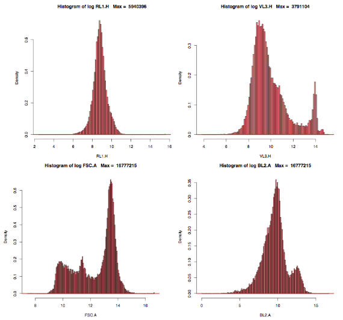
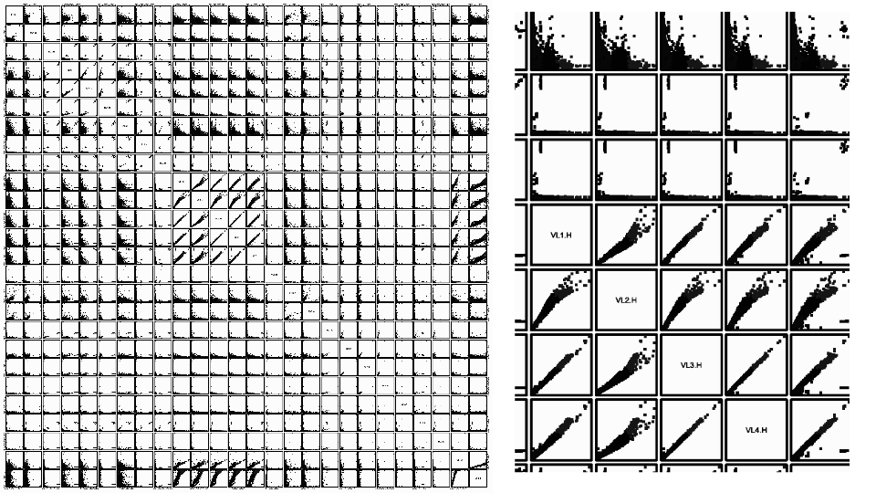
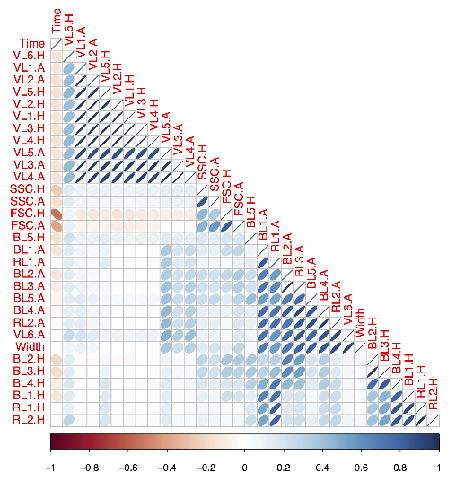
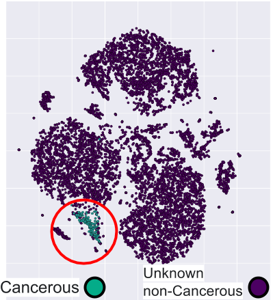
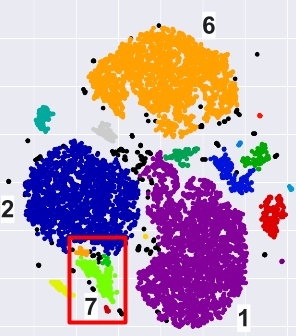
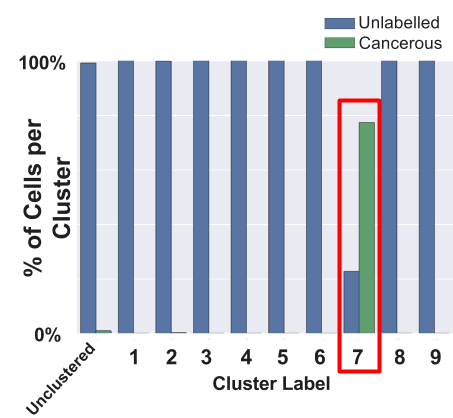

Introduction
I did a 3-week consulting project with an exciting company that uses personalized medicine to help cancer patients improve their outcome. One of the challenges that this company faces is the automatic detection of cancer cells in flow cytometry data. This is a key challenge that the company needs to overcome to scale up their business.
Description of the company's workflow
Company X uses a propriety platform to find conditions that specifically target an individual patient’s cancer. They use a technique called flow cytometry to determine the effectiveness of their platform (i.e. how many cancer cells are left)....but what is flow cytometry and how does it work? Disclaimer: flow cytometry has been around for decades in research and applied settings, and there are many different variations of flow cytometry. I will describe a simplified version of flow cytometry and its analysis here. Flow cytometry is a technique in which hydrodynamic focusing is used to take a large population of cells and line them up one at a time. Each cell is then passed through the light path of several lasers and the way the laser light interacts with the cell is captured. For instance, how the light “scatters” or is distorted by the cell can tell you about the cell size and cell shape. In addition, the presence and amount of various cell surface markers (detected by the fluorescently tagged antibodies mentioned earlier) gives information about the cell type (e.g. a healthy cell, a cancerous cell).
A brief introduction to flow cytometry
Now that we have an understanding of the technology, what does the data look like? In the case that I will describe here 30 measurements are captured for 10,000 cells on a per cell basis. We can think of this data as a matrix of numbers: 10,000 rows (or cells) by 30 columns (or features). Since humans aren’t very good at thinking in 30-dimensions, the way that manual analysis of flow cytometry data is done is by picking two dimensions (or features) at a time, selecting cells within that population for further analysis and then repeating the whole process with two different features. In the end a skilled and experienced expert can quantify the number cancer cell left after utilization of Company X’s platform, but it is very time-consuming and is a huge bottleneck for Company X, affecting their ability to keep up with the demand for their services.
My goal was to alleviate the bottleneck at Company X so that they can help more patients
My goal was to alleviate the bottleneck at Company X so that they can help more patients. I wanted to do this by developing an unsupervised approach to automatically detect and quantify the number of cancerous cells left after the application of their propriety platform. This approach needs to be unsupervised because both normal and cancer cells vary from patient to patient, so the antibodies used in a given experiment may change as well (resulting in different features).
Data exploration
Now, lets take a look at the actual data and start exploring it! One of the first things that I normally do when presented with a new dataset is plot histograms of each feature to get an idea of how the data is distributed. Note: the labels on the plots are intentionally uninformative. Below (Figure 1) I selected four features to display, you can see that the upper left distribution is roughly a Gaussian distribution and the two distributions on the right appear like they might be bimodial (a mixture of two Gaussian distributions), whereas the bottom left distribution might be tri-modal or might not a mixture of Gaussians at all. This information can be useful in selecting the right model for the data.
 Figure 1: Histograms of log-transformed features illustrate the differences in the distributions of various figures.Another useful way to visualize high-dimensional data is to make every potential combination of pairwise scatterplots (Figure 2). Whereas histograms helped us understand the individual features, scatterplots can help us understand the relationships between the different features. For instance, in the blow-up that I did of Figure 2 (right panel) you can see that several of the features are highly correlated with each other (most of the data lays along the y=x line). A better way to determine if features are correlated is to simply calculate the Pearson correlation coefficient between all feature pairs (Figure 3). The blocks with dark blue in the upper part of this figure suggest that feature reduction may be useful when we build our models.
 Figure 2: Left panel: All combinations of pair-wise scatterplots. Right panel: An enlargement of selected features. Figure 3: To determine the relationships between features the Pearson correlation coefficient between all feature pairs was calculated.
Modeling
Now that we understand the data we are almost ready to start modeling. I mentioned before that any method that I use to identify cancer cell populations has to be unsupervised so that it will be able to identify cancer cells in unlabeled data and for different patients (i.e. different patients = different antibodies and different features), however in order to do efficient modeling I need some idea of the ground truth. To this end Company X provided a small amount of data in which the cancer cells were labeled. I will evaluate the performance of my models against this ground truth. To determine if my model is overfitting the training data I have multiple independent datasets that I will test the models on as well. It was not a trivial task for the company to generate this labeled data, or for me to convert the data into a format that was conducive for fast, iterative modeling, but I’m not going to discuss those challenges in this blog post.
Next, I wanted to start modeling, but where should I start? As I mentioned previously, flow cytometry has been around for a long time and research scientists have devoted significant efforts into automating the quantification of flow cytometry data. There is actually a project called FlowCAP that assesses the ability of various models to automatically identify cell populations in various common datasets. I chose to test packages that reported high precision and high recall, were freely available and the reported runtime was not prohibitive. None of the packages that I tested out on my datasets (regardless of if or how I scaled or transformed the data) were able to distinguish cancer cells from non-cancer cells. Next, I performed iterative clustering: lets say that all the cancer cells and some of the normal cells co-cluster in cluster 4, I would then use cluster 4 as my dataset and re-apply the clustering method to everything in cluster 4. This produced multiple clusters (i.e. cluster 4a, cluster 4b, etc.) but now the cancer cell population would start to cluster in multiple clusters and all of these clusters would be mainly composed on non-cancerous cells.
Based on the “curse of high-dimensionality” and the results reported in Figure 3 showing that there is a high correlation between many of the features I next performed dimensionality reduction using Principal Component Analysis (PCA). I was encouraged by the results as 95% of the variation could be explained with the first 5 principal components and 99% of the variation with the first 7 components! However, the packages were still unable to distinguish cancer cells from non-cancer cells when I utilized either the first 5 or first 7 components. Two common unsupervised clustering techniques (k-means and DBSCAN) produced similar, negative results.
A clustering method that works!
Since PCA is a linear dimensionality reduction method, I next attempted a non-linear dimensionality reduction method called t-Distributed Stochastic Neighbor Embedding (t-SNE) which seeks the optimal 2D projection of the data that preserves the local structure in the original high-dimensional space. This resulted in most of the cancer cells clustering together and a clear separation between the cancer and non-cancer cells (Figure 4). To automatically identify clusters in this data I next used DBSCAN which is a density-based unsupervised clustering technique (Figure 5). Finally, we can quantify these results to determine how accurate and precise this method is at identifying cancer cells. In Figure 6 I’ve plotted the percentage of cell type found in each cluster, where blue is non-cancerous and green is cancer cells. You can see that most clusters are almost entirely composed of non-cancerous cells (blue bar is close to 100%) and if we focus on cluster 7 we can see that it is mainly composed of the cancerous cells (perfect results would have shown cluster 7 composed entirely of cancerous cells and no cancer cells would be in any other cluster). Excitingly, when I showed these results to Company X they looked at the non-cancerous cells that I had identified as being part of cluster 7 and over half of them were originally mis-classified and are in fact cancer cells! Finally, I created boxplots to summarize the data on a per cluster basis. This will allow an expert to validate the results and to identify which cluster the cancer cells belong to in an unlabeled dataset.
 Figure 4: t-distributed Stochastic Neighbor Embedding (t-SNE) was used to reduce the dimensionality of the data. Figure 5: Density-Based Spatial Clustering of Applications with Noise (DBSCAN) was used to automatically identify clusters. I've circled in red the cluster that contains most of the cancer cells.
 Figure 6: The percentage of cell type found in each cluster is plotted, where blue represents the non-cancerous cells and green represents the cancerous cells. Cluster label refers to clusters identified with DBSCAN.
Concluding remarks
When I apply this method to other patient samples the results are fairly similar, however the method doesn’t work great for all patients’ samples. There appears to be is a subset of features/antibodies that are very useful in differentiating cancer cells from normal cells. In the future, I hope to help this company identify which antibody combinations that they should be using in order to most effectively identify cancer cells. In conclusion, I developed a method to identify cancer cells that will allow Company X to increase efficiency and help more patients.